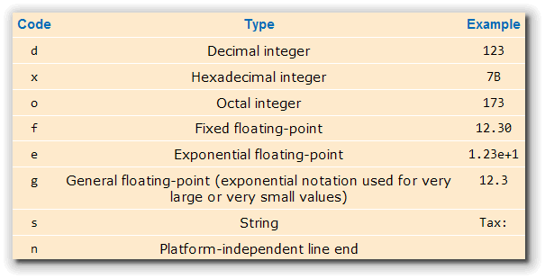
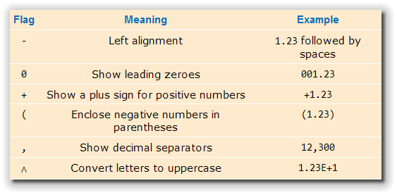

In lecture, you learned how to
to "fine-tune" your output, using the facilites of Java's
Formatter class and the String.format()
method. In this assignment, you'll put these to work
to display the output from an IPO program. You'll also need
to remember how to parse String input,
converting it to a double.
Salary Survey
Write a standard console program named SalarySurvey. Place it in the Week01 folder, since that's where the test programs are located. Here are the program's requirements:
- Ask the user to enter their first name and desired yearly salary, separated by a space.
- Use the
Scanner'snext()method to read the input into twoStringvariables. - Use the appropriate parsing method to convert the salary
into a
doubleand store it in adoublevariable. - Use
String.format()andSystem.out.println()to display the result like this:Name: Steve Desired salary: $ 1,275,315.75 ----+----|----+----|----+----|----+----|----+----|
- You can assume that the user will only enter valid input
for the salary value. The spacing should be the same
for amounts up to 9 million. Here's another example:
Name: BillyG Desired salary: $ 1.00 ----+----|----+----|----+----|----+----|----+----|
Here is a quick reference to the formatting options you might
want to use:

Here are the different flags you can use to fine-tune the output:
Once you have created the program, compile it and
then Check your results. Keep trying until you get a perfect
score. If you have difficulty, you'll find
some help in this video.